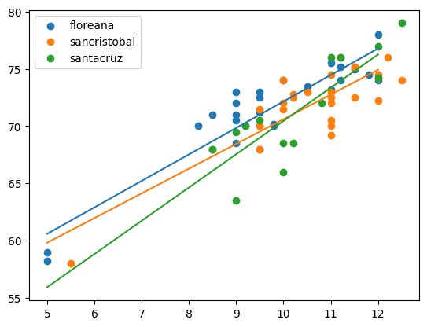

import matplotlib.pyplot as plt
import numpy as np
from scipy.optimize import minimize
import pandas as pd
import statsmodels.formula.api as smf
import patsy as pt
import warnings # cause pandas is ridiculousdf = pd.read_csv("https://raw.githubusercontent.com/roualdes/data/refs/heads/master/finches.csv")model = smf.ols("winglength ~ island * beakwidth", data = df)
fit = model.fit()for name, gdf in df.groupby(["island"]):
plt.scatter(gdf["beakwidth"], gdf["winglength"], label = name[0]);
xnew = np.array([5, 12])
ndf = pd.DataFrame.from_dict({"beakwidth": xnew,
"island": [name[0], name[0]]})
ndf["yhat"] = fit.predict(ndf)
plt.plot(xnew, ndf["yhat"])
plt.legend();
ndf = df \
.groupby("island", as_index = False) \
.aggregate(beakwidth = ("beakwidth", np.mean))/var/folders/zp/6ns7k9bn1vs5cr99qc2xtdd00000gp/T/ipykernel_23633/295470535.py:3: FutureWarning: The provided callable <function mean at 0x1070342c0> is currently using SeriesGroupBy.mean. In a future version of pandas, the provided callable will be used directly. To keep current behavior pass the string "mean" instead.
.aggregate(beakwidth = ("beakwidth", np.mean))fit.predict(ndf)0 71.269231
1 72.029630
2 71.246667
dtype: float64For extra credit (I’ll replace your worst quiz score with a perfect score), either
show why our function
bootstrapisn’t compatible withstatsmodels, orreuse our linear regression functions and
bootsrapto answer
In either case, we’ll use our function bootstrap, so here it is.
- What we want to be able to do, is write a function that can be passed into our function
bootstrapand have it just work. Here’s the idea, even if it doesn’t work.
def ll_regression_prediction(df, **kwargs):
fit = smf.ols("winglength ~ island * beakwidth", data = df).fit()
return fit.predict(kwargs["ndf"])def bootstrap(T, data, R = 1_000, conflevel = 0.95, **kwargs):
shp = np.shape(T(data, **kwargs))
rng = np.random.default_rng()
Ts = np.zeros((R,) + shp)
N = np.shape(data)[0]
a = (1 - conflevel) / 2
for r in range(R):
idx = rng.integers(N, size = N)
Ts[r] = T(data[idx], **kwargs)
return np.quantile(Ts, [a, 1 - a], axis = 0) bootstrap(ll_regression_prediction, df, ndf = ndf)--------------------------------------------------------------------------- KeyError Traceback (most recent call last) Cell In[9], line 1 ----> 1 bootstrap(ll_regression_prediction, df, ndf = ndf) Cell In[8], line 9, in bootstrap(T, data, R, conflevel, **kwargs) 7 for r in range(R): 8 idx = rng.integers(N, size = N) ----> 9 Ts[r] = T(data[idx], **kwargs) 10 return np.quantile(Ts, [a, 1 - a], axis = 0) File ~/venvs/py3/lib/python3.13/site-packages/pandas/core/frame.py:4113, in DataFrame.__getitem__(self, key) 4111 if is_iterator(key): 4112 key = list(key) -> 4113 indexer = self.columns._get_indexer_strict(key, "columns")[1] 4115 # take() does not accept boolean indexers 4116 if getattr(indexer, "dtype", None) == bool: File ~/venvs/py3/lib/python3.13/site-packages/pandas/core/indexes/base.py:6212, in Index._get_indexer_strict(self, key, axis_name) 6209 else: 6210 keyarr, indexer, new_indexer = self._reindex_non_unique(keyarr) -> 6212 self._raise_if_missing(keyarr, indexer, axis_name) 6214 keyarr = self.take(indexer) 6215 if isinstance(key, Index): 6216 # GH 42790 - Preserve name from an Index File ~/venvs/py3/lib/python3.13/site-packages/pandas/core/indexes/base.py:6261, in Index._raise_if_missing(self, key, indexer, axis_name) 6259 if nmissing: 6260 if nmissing == len(indexer): -> 6261 raise KeyError(f"None of [{key}] are in the [{axis_name}]") 6263 not_found = list(ensure_index(key)[missing_mask.nonzero()[0]].unique()) 6264 raise KeyError(f"{not_found} not in index") KeyError: "None of [Index([53, 18, 57, 61, 44, 52, 2, 65, 17, 42, 50, 49, 47, 46, 31, 21, 49, 6,\n 55, 62, 20, 37, 36, 48, 44, 43, 10, 33, 24, 36, 54, 40, 40, 32, 33, 53,\n 8, 61, 33, 18, 50, 39, 35, 44, 30, 35, 61, 26, 3, 45, 55, 0, 21, 16,\n 12, 55, 13, 8, 13, 53, 5, 35, 51, 28, 36, 58, 21, 34],\n dtype='int64')] are in the [columns]"
This is the important bit of that annoyingly long error message,
----> 9 Ts[r] = T(data[idx], **kwargs)
We passed in df as the variable data. However, pd.DataFrames can’t be directly indexed with numpy arrays of integers. They can only index the “keys” of the columns’ names, e.g. df["island"]. Hence, this errors.
- We can make our numpy based functions work, since numpy arrays can indeed be indexed directly with numpy arrays of integers. Let’s first set up our data. I’ll use
patsyfor this, since that’s what it is made for.
y, X = pt.dmatrices("winglength ~ island * beakwidth", data = df)
data = np.c_[y, X]Here are our functions to fit linear regression.
def ll_regression(theta, data):
X = data[:, 1:]
y = data[:, 0]
lm = np.sum(X * theta, axis = 1)
return np.sum( (y - lm) ** 2 )
# ll_grad was for only two coefficients, but we have more.
# You can either not use it at all, like I've done below, or
# here's the gradient done in linear algebra. You'll
# have to incorporate it yourself.
def ll_grad(theta, data):
X = data[:, 1:]
y = data[:, 0]
return -2 * (y - X @ theta).T @ Xdef ll_regression_prediction_minimize(data, **kwargs):
rng = np.random.default_rng()
init = rng.normal(size = np.shape(data[:, 1:])[1])
o = minimize(ll_regression, init, args = (data,))
return np.sum(o.x * np.array(kwargs["xnew"]), axis = 1) # axis = 1 is the only changexnew = np.asarray(pt.dmatrix("~ island * beakwidth", data = ndf))cis = bootstrap(ll_regression_prediction_minimize, data, xnew = xnew)cisarray([[70.64136973, 71.33556734, 69.72060648],
[72.02733426, 72.80993729, 72.39812768]])To make this output a bit more obvious, I’ll put it into a dataframe.
cidf = pd.DataFrame(cis.T, columns = ["lower bound", "upper bound"])
cidf["island"] = ndf["island"]
cidf| lower bound | upper bound | island | |
|---|---|---|---|
| 0 | 70.641370 | 72.027334 | floreana |
| 1 | 71.335567 | 72.809937 | sancristobal |
| 2 | 69.720606 | 72.398128 | santacruz |
- And here’s the easiest solution, which I wasn’t willing to announce, because it wasn’t worth any extra credit… unless of course you figured out how to do this without my telling you, then it’s worth extra credit.
Re-write bootstrap to accomodate both pd.DataFrames and np.ndarrays.
def bootstrappp(T, data, R = 1_000, conflevel = 0.95, **kwargs):
shp = np.shape(T(data, **kwargs))
rng = np.random.default_rng()
Ts = np.zeros((R,) + shp)
N = np.shape(data)[0]
a = (1 - conflevel) / 2
for r in range(R):
idx = rng.integers(N, size = N)
if isinstance(data, np.ndarray):
Ts[r] = T(data[idx], **kwargs)
else:
Ts[r] = T(data.iloc[idx], **kwargs)
return np.quantile(Ts, [a, 1 - a], axis = 0) with warnings.catch_warnings():
warnings.simplefilter(action='ignore', category=FutureWarning)
ci2 = bootstrappp(ll_regression_prediction, df, ndf = ndf)ci2df = pd.DataFrame(ci2.T, columns = ["lower bound", "upper bound"])
ci2df["island"] = ndf["island"]
ci2df| lower bound | upper bound | island | |
|---|---|---|---|
| 0 | 70.629434 | 72.010639 | floreana |
| 1 | 71.341263 | 72.808742 | sancristobal |
| 2 | 69.778694 | 72.410188 | santacruz |